转载自: louis
原文链接: http://louiszhai.github.io/2018/05/31/alfred/
Alfred神器使用手册
目录
我曾经耗费巨大的精力，试图在计算机的使用效率上找到一条优化的捷径，一直以来都收效甚微。直到遇上 alfred，它强大的工作流机制，彻底解决了输入输出的痛点，极大的减少了程序之间的切换成本和重复按键成本，这才让我明白，原来计算机可以这么玩。
神奇的魔法帽，alfred 初印象。
如何安装alfred
首先可以从 alfred官网 自行下载安装，免费用户可以使用除 workflow 以外的其它功能，如需使用 workflow，则需要购买Powerpack。
不建议：自行搜索破解版，或者点个喜欢，留下邮箱找我要…
一个例子说明为什么要用alfred
以前，使用mac查询一个单词，或者翻译一个单词，我们要么经历五步：
- 手动打开浏览器
- 进入谷歌首页
- 选中输入框
- 输入或粘贴查询单词，然后空格并加上”翻译” 两个字，然后再回车
- 等待浏览器展示查询结果;
要么经历四步：
- 打开翻译应用(比如自带词典)
- 输入或粘贴查询单词
- 翻译应用输出查询结果
- 查询过后，一般都需要Cmd+Q退出应用（或者Cmd+H隐藏词典，亦或Cmd+Tab切换回上一个应用）
查询单词这个场景中，我们至少需要兴师动众，切换或打开一个应用两次，定位输入框一次，输入或复制粘贴一次。且查询结果页也会挡住当前的工作区，使得我们分心，甚至忘记自己刚刚在做啥，总之，体验极不流畅。
alfred 工作流正是为了解决这个问题而设计的。使用 有道词典 workflow，最快只需两次按键便可查询单词. 举个栗子🌰：为了查询单词 “workflow”，我会选中单词所在区域，然后按住 Option+Y 键(我已将有道翻译的快捷键设置为 Option+Y)，单词查询结果就出来了，不需要切换应用，同时查询结果也较少的挡住工作区。如下所示：
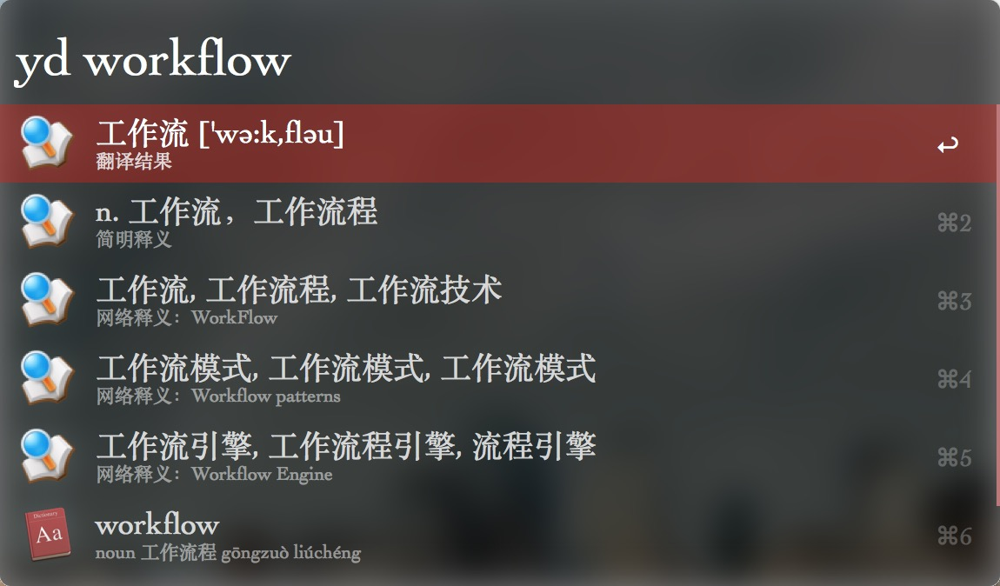
两次按键就能查询单词，这么好的应用为何不用呢？
alfred能做什么？
对于一个刚刚听说alfred的新手来说，迫切想知道的莫过于了解它能做什么？据我所知，公开的 alfred workflow 至少有 500+，有心网友甚至罗列了一张 [表格][http://www.alfredworkflow.com/]来管理它，表格的每一行都解锁了一项 alfred 技能（注意并非所有的 workflow 都支持最新的 alfred 3.6.1版本）。你可以下载并免费使用其中任何一个 workflow，甚至，还可以基于一些不错的 workflow 样本，加入创意，改造成属于自己的 workflow（前提是已获得 powerpack license）。
默认情况下，alfred 至少能胜任 15 项工作：
- 应用搜索
- 文件或目录搜索
- 文本内容搜索
- 标记搜索
- 快捷网页搜索
- 书签搜索
- 计算器
- 词典搜索
- 通讯录搜索
- 剪切板搜索
- 代码片段搜索
- iTunes管理
- 1Password搜索
- 系统常用命令快捷操作
- 直接唤起指定终端并执行命令
获得 powerpack license 的 alfred 将获得强大的 workflows 功能，后续将专门讲解。
1.应用搜索
输入应用名，列出本地安装的所有相关应用，可以快速唤起。
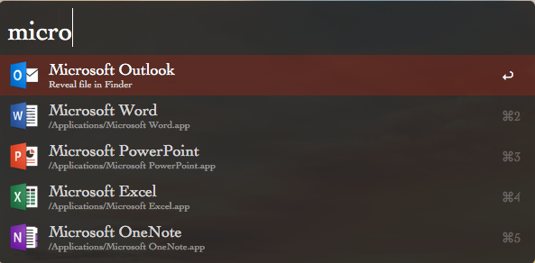
2. 文件或目录搜索
输入 find 或 open 命令，以及待搜索的文件或目录名，列出磁盘中的相关文件，可以快速定位 finder，相当于一个简易的 EasyFind。
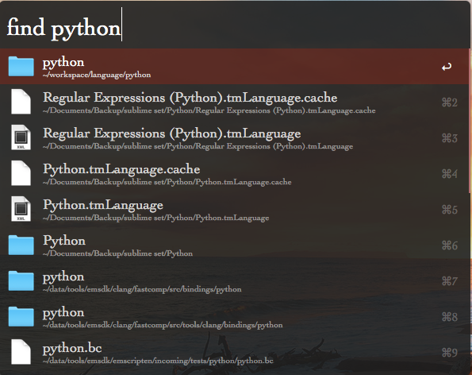
3. 文本内容搜索
输入 in 命令，以及待搜索的文本，列出磁盘中包含该文本的相关文件，可以快速定位文件，相当于简易的终端 find 命令。
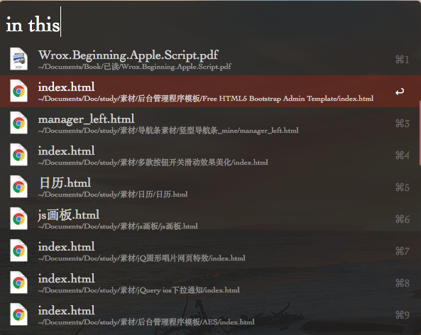
4. 标记搜索
输入 tags 命令，以及待搜索的标记颜色中文名称，列出打上相应标记的目录，可以快速定位标记目录。
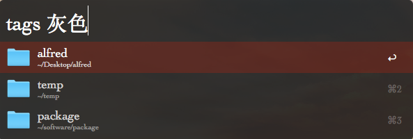
以上 2、3、4 展示的搜索能力，仅仅是 alfred 提供的冰山一角的小功能（对应于 alfred preferences 面板（Cmd+,唤起）— features 栏— file search 功能，如下图所示），理论上可以进行全盘搜索，但由于性能原因，截止 alfred 3.6.1，默认至多展示前40个搜索结果。
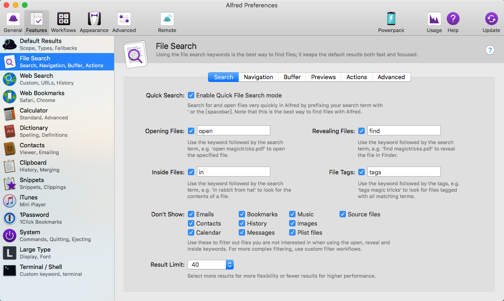
对于通常的搜索而言，完全没必要进行全盘搜索，因此只将当前用户目录加进去即可，请参考下图添加用户目录：
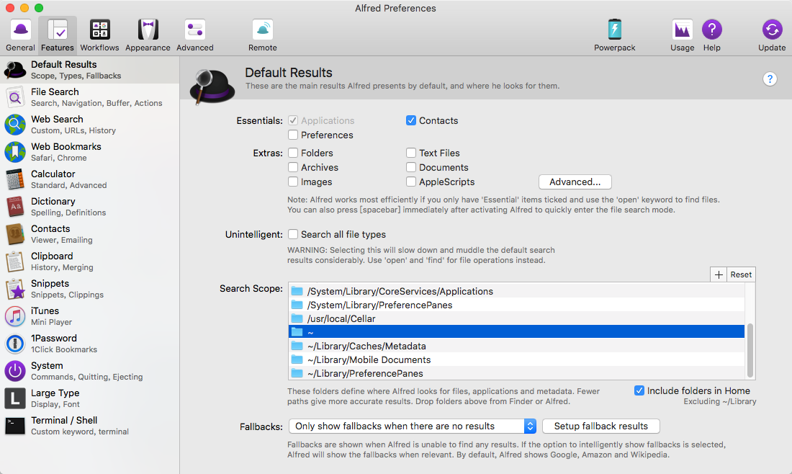
5. 快捷网页搜索
alfred 可以非常方便的打开指定网页（alfred preferences 面板— features 栏— web search），这是一个非常贴心的小功能。默认情况下，alfred 自带了 wiki、twitter、ebay、bing、gmail、yahoo、linkedin、youtube、facebook 等几十种网站的链接，你可以输入关键字如『wiki』空格后再输入搜索内容，最后再回车打开 wiki 网站，如下所示：
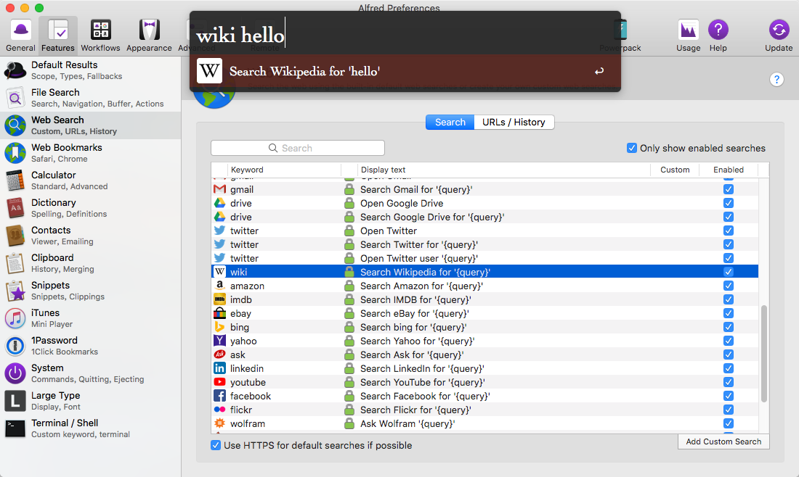
也可以点击此处右下角『Add Custom Search』按钮新增你常用的网页搜索，如下所示：
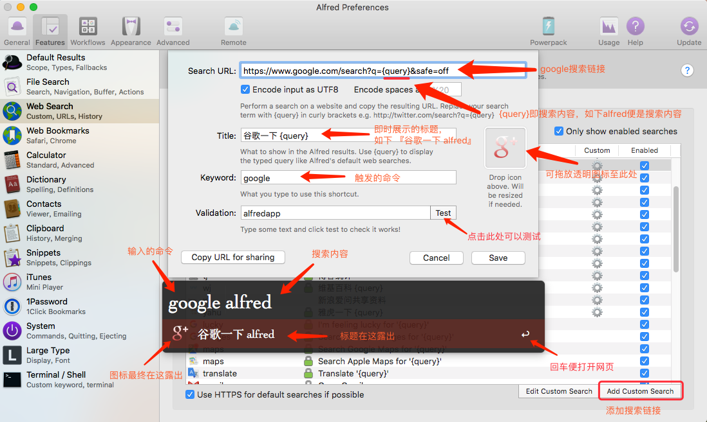
6. 书签搜索
书签搜索是 alfred3.x 版本中新加的功能，方便用户在浏览器的大量书签中快速搜索。
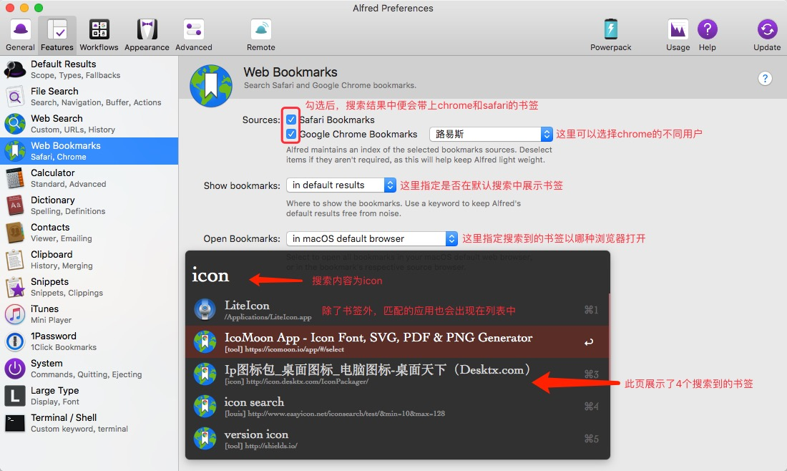
7. 计算器
alfred 默认提供计算的能力，如下所示。
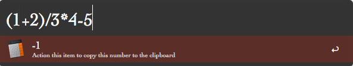
输入=，还能进行复杂运算，如下。
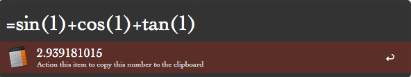
8. 词典搜索
实际上，自带的词典搜索功能不是很理想，建议搭配 有道词典 workflow一起使用。
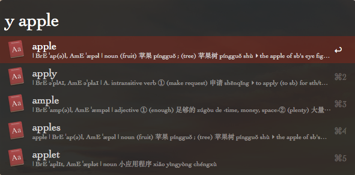
9. 通讯录搜索
alfred 还可以用来搜索通讯录中的联系人，如下所示。
10. 剪切板搜索
剪切板的管理也是 alfred 的一大亮点，如下所示。
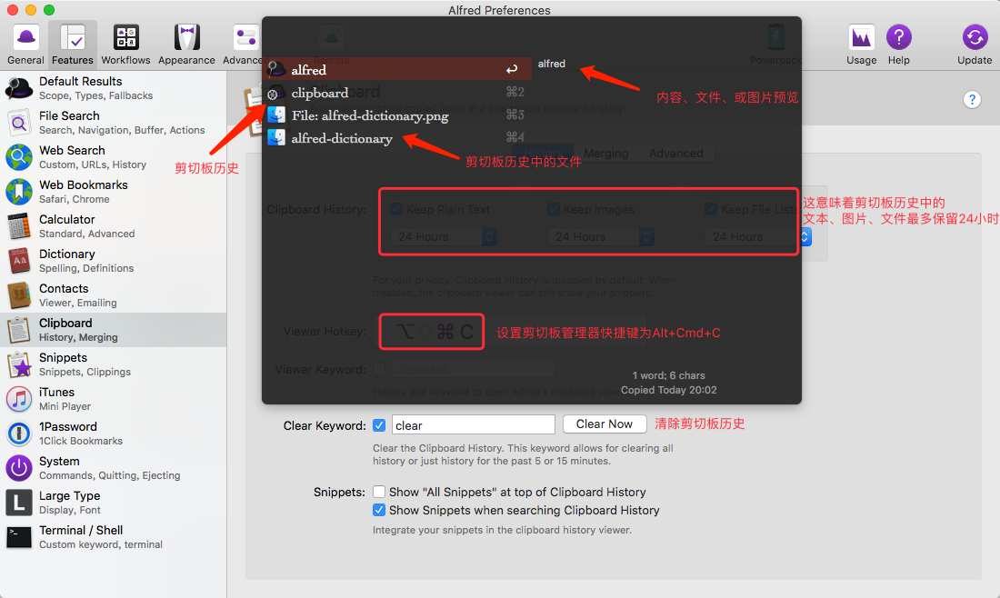
如此一来，拷贝多段内容就变得非常容易，借助 alfred，可以在一处连续拷贝，然后另一处连续粘贴，避免了频繁切换应用带来的操作疲劳；同时之前复制过的文本或图片，也不用担心过会找不到。
代码片段搜索，相对 aText 来说，感觉不是特别方便，略过（aText 是 mac 下输入增强工具，输入关键字，自动补全文本）。
iTunes管理使用得不多，略过。
1Password由于未安装，也略过。
14. 系统常用命令快捷操作
通过 alfred 可以快捷地操作系统锁屏、关机、重启、休眠等十几种指令，非常便捷。对于强迫症用户来说，唤起屏保、休眠、清空垃圾篓、退出应用等指令可能较为常用。
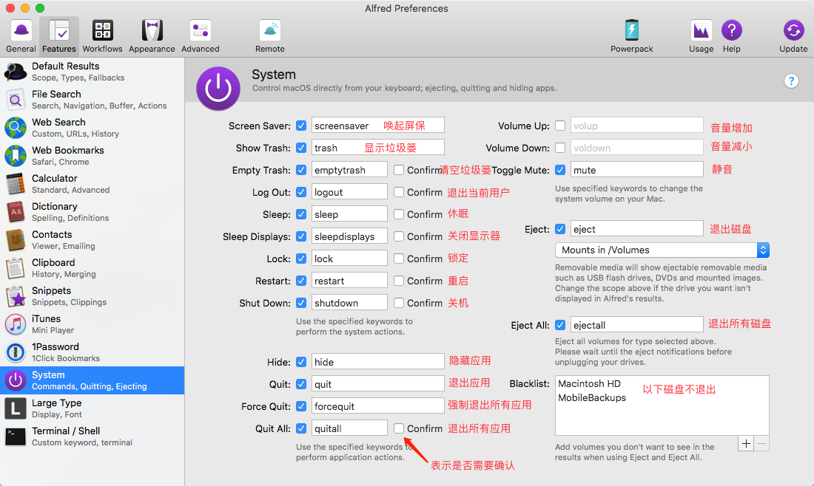
15.直接唤起指定终端并执行命令
通过 alfred 可以直接唤起终端窗口，并执行命令，如下所示。
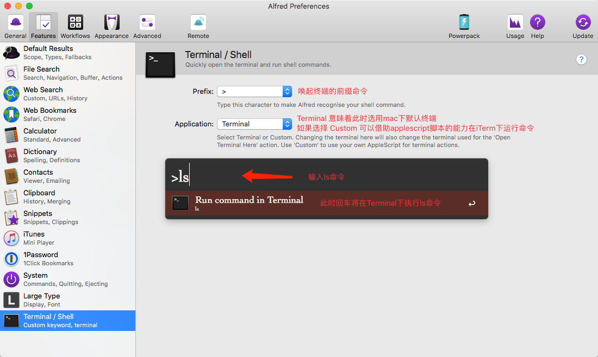
以上，Application 若选择『Custom』选项，下方再贴如下一段 applescript 代码，便可以直接在 iTerm 中执行命令。
on alfred_script(q)
tell application "iTerm"
set _length to count window
if _length = 0 then
create window with default profile
end if
set aa to (get miniaturized of current window)
if aa then
set miniaturized of current window to false
end if
set bb to (get visible of current window)
if bb is false then
set visible of current window to true
end if
set cc to frontmost
if cc is false then
activate
end if
(*if _length = 0 then*)
set theResult to current tab of current window
(*else
set theResult to (create tab with default profile) of current window
end if*)
write session of theResult text q
end tell
end alfred_script
小结
至此 alfred 的 Features 面板功能介绍完毕。alfred 设置界面一共包含10个面板，还有9个面板如下所示：
- General（通用，用于设置是否开机启动，及设置唤起快捷键，通常设置为
Alt+Space即可） - Workflows（工作流）
- Appearance（外观，用于设置 alfred 输入窗口的外观、字体、颜色等）
- Advanced（高级）
- Remote（远程，用于远程管理，这意味着你需要在 App Store 购买一个 Alfred Remote 的app，然后便可以在手机上远程操作 mac）
- Powerpack（许可证，购买 powerpack 的用户便可以使用 workflow 功能）
- Usage（使用统计）
- Help（帮助，提供快速上手文档、使用文档、反馈bug、用户论坛等链接）
- Update（更新日志，可查看更新日志及更新到最新版）
Appearance 面板除了设置输入窗口的外观外，还有一些外观相关的设置，在这里可以设置默认展示行数等。
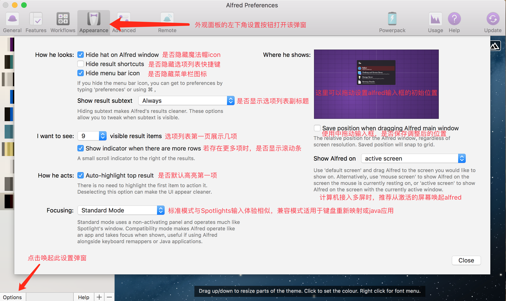
Advanced 面板包含了一些高级设置，如下所示。
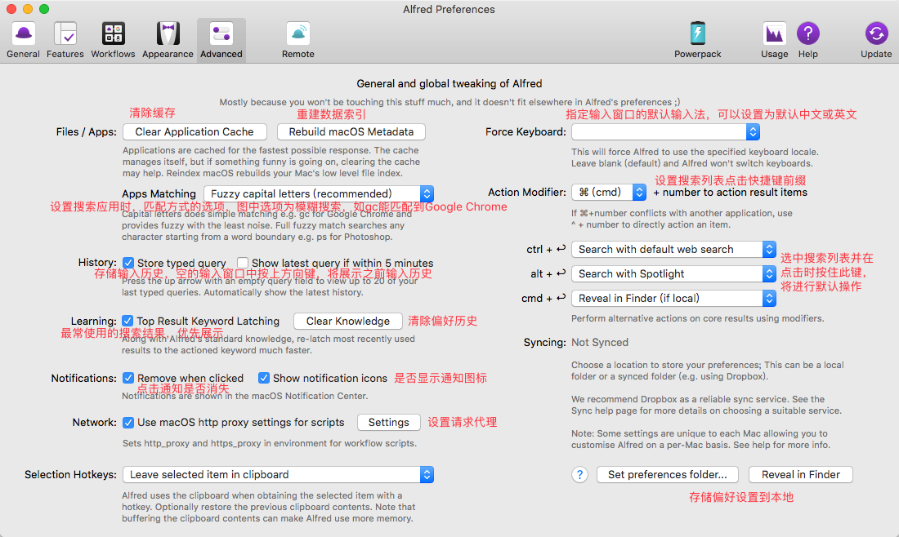
Usage 面板包含了你使用 alfred 的数据统计，如下所示。
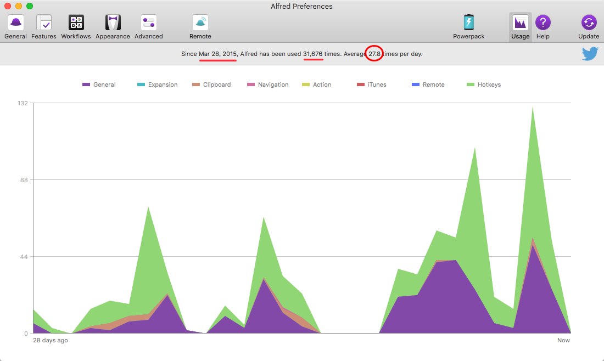
由此可见，几乎我每天都会用 alfred，3年来总计使用3W+次，平均每天使用27.8次，剔除节假日，工作日每天平均使用次数高达40+次，可以说，alfred 极大的方便了我的工作和生活。
alfred workflow
基本功能介绍完了，终于，我们要一窥 alfred 的核心功能— workflow。工作流可谓是 alfred 最强大的功能，它是秒杀其他效率应用的核心技术，也是最吸引我的地方。
唯有掌握工作流，mac 才能真正起飞。
常用的workflow
欲了解工作流，先从常用的 workflow 开始，下面简单展示一些典型。
ip查询
指定 qq 好友聊天
指定微信好友聊天
印象笔记搜索
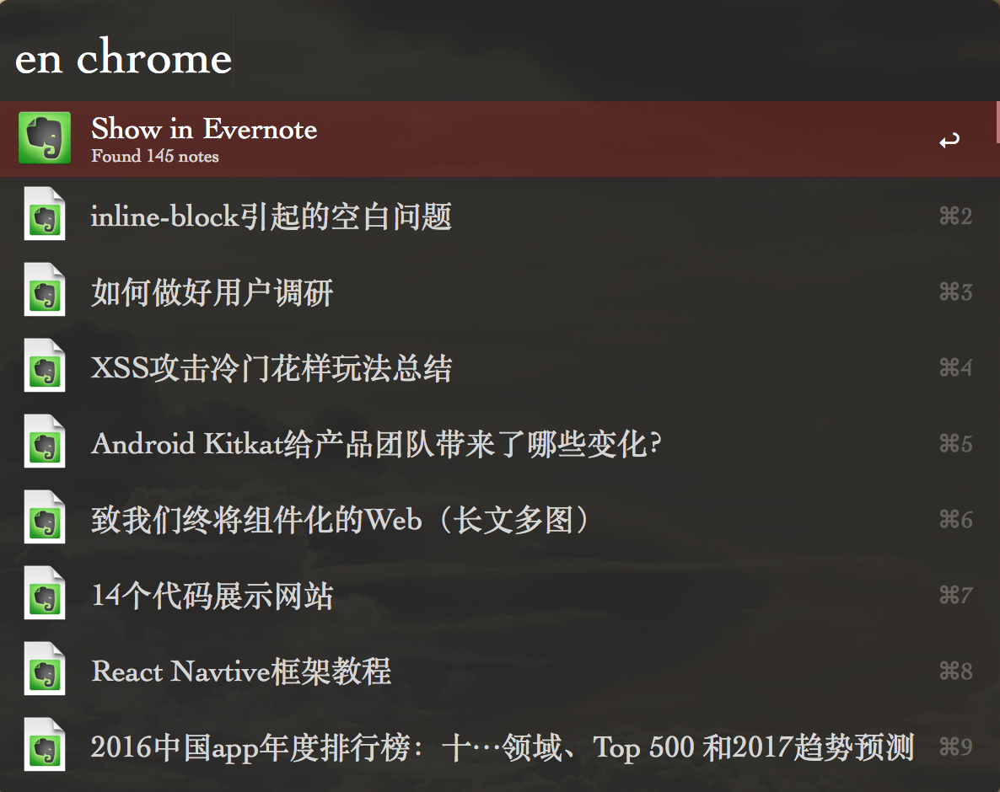
百度地图搜索
点评搜索
豆瓣电影搜索
豆瓣书籍搜索
知乎日报
水木清华社区搜索
php api 搜索
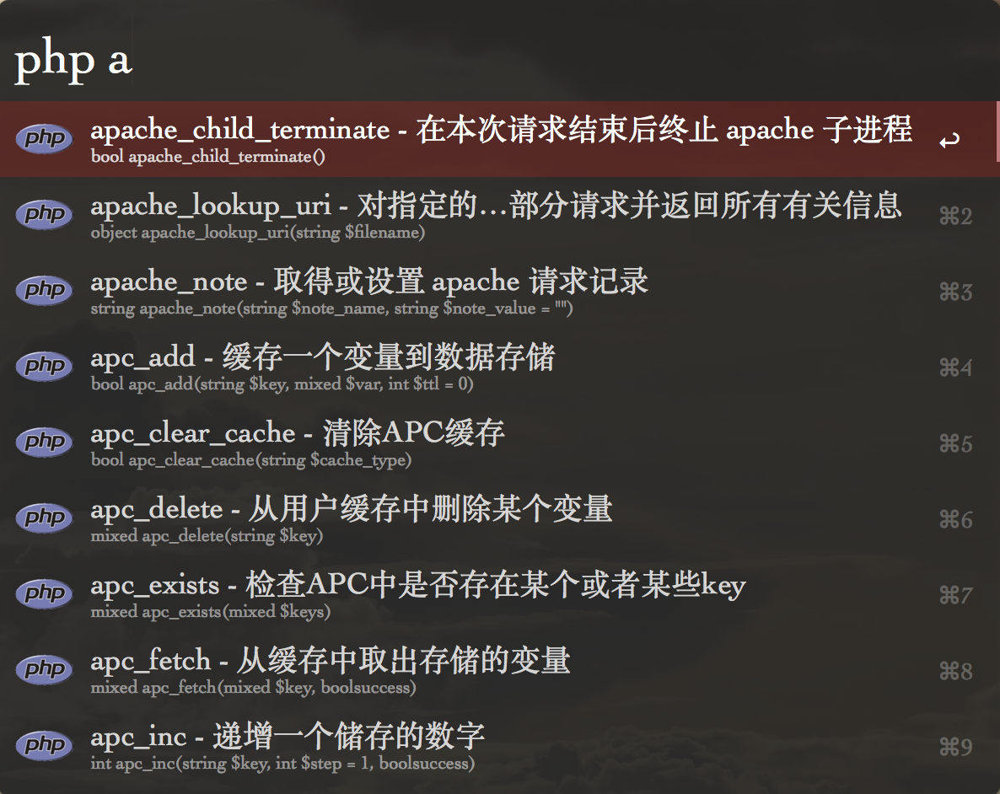
jquery api 搜索
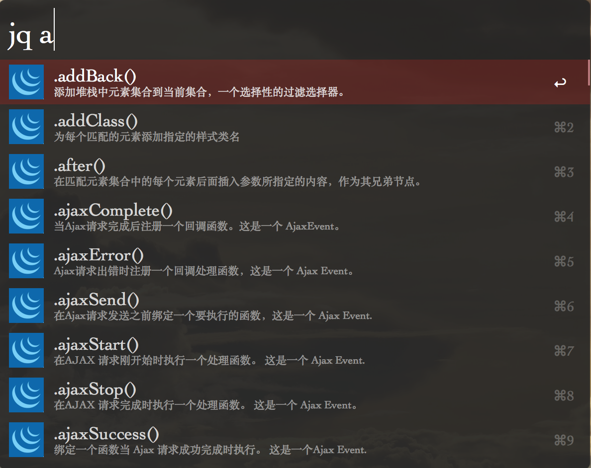
快递查询
finder 设置
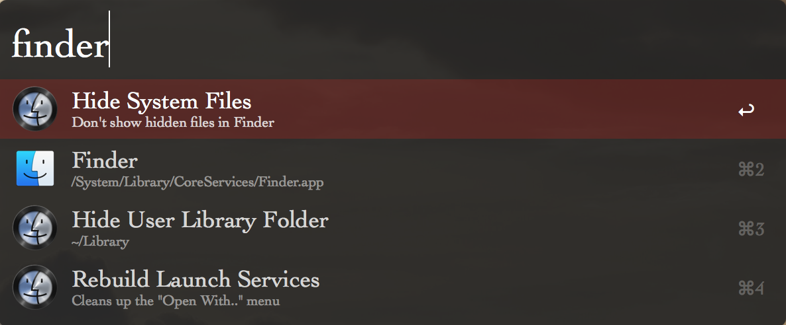
举例就到这了，另外，这里有我的一些 afred workflows，欢迎试玩。
workflow是什么
你可能很好奇，上面这些 workflow，都是怎么开发的呢？别急，稳住慢慢来。
先问一个问题，什么是工作流？
我们都知道，任何微小的工作，都可以拆分成多个步骤，这些步骤顺序相连，依次进行，最终输出成果，有些步骤可能存在多个分支，并且最终输出多个成果。这些步骤依次执行，并且向后传递阶段性信息的流，就是工作流。现实生活中的工作流可能更为复杂，但本质还是如此。正是基于这种现实背景，alfred 从 2.0 版本起加入了 workflow，普通的 workflow 如下所示。
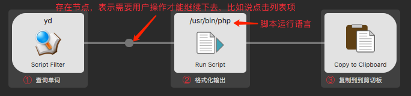
这个工作流包含三个步骤：① 查询单词—> ② 格式化输出—> ③ 复制到剪切板。
yd是唤起该工作流的命令，输入yd，然后空格，接着输入待查询的单词，script Filter便开始执行，最终输出查询结果列表（图片见文章开头例子），至此，工作流的步骤①查询单词部分完成。
我们注意到，图中有两条数据流连线，第一条包含节点，这意味着，节点处需要等待用户操作（点击）才能继续下去。一旦用户点击列表项，后续流程②格式化输出，将直接执行，紧接着其后续流程③复制到剪切板也将顺序执行，最终单词查询结果复制到剪切板，工作流结束。
实际上，上图中包含节点的数据流连线，点击时还可指定相应的辅助键，辅助键可选 none、ctrl、alt、cmd、fn、shift之一，默认为 none，即无须辅助键。指定辅助键的好处在于，不同的辅助键，可以触发不同的后续流程，如上图则只设计一个后续流程（即②格式化输出流程）。设置辅助键的界面如下所示，可以指定相应提示，以及流程执行时是否关闭 alfred 窗口。
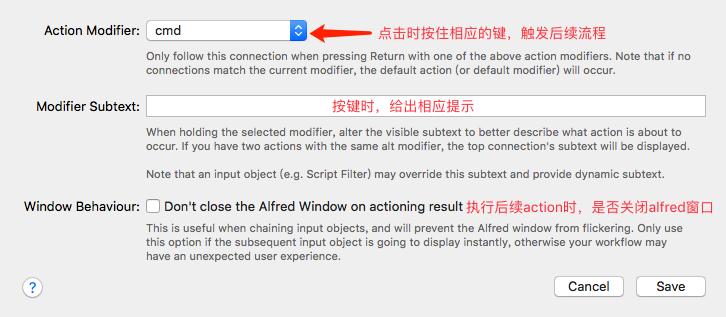
如何创建第一个workflow
是不是跃跃欲试了，来创建第一个 workflow 吧。
首先，打开 alfred preferences 设置界面，选中第三个面板 Workflows。
点击面板底部左侧的
+按钮，选择 Blank Workflow。
补全 workflow 相关信息，最后点
Create按钮保存，如下所示。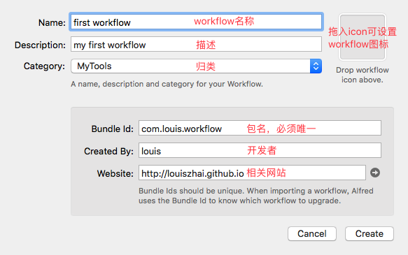
于是第一个空的 workflow 创建好了，接下来我们来搭建一个 google 搜索的工作流，通过这个工作流，我们能快速的选中文本然后使用 google 搜索该文本，不妨参考以下步骤。
1）新增热键：右键 - Triggers-Hotkey。
2）热键设置面板中：Hotkey 设置为
Alt+G（快捷键必须以Ctrl、Alt、Shift或Cmd开始，而Alt键很少被软件占用，推荐作为 alfred 的常用修饰键）；Argument 选择『Selection in macOS』（意味着 mac 任何应用选中的文本都会通过 alfred 传给后面的流程），然后保存。4）热键保存后，继续添加google搜索的流程：右键 - Actions - Open URL。
5）Open URL 设置面板中：URL 设置为
https://www.google.com/search?q={query}，{query} 即热键流程中选中的文本（alfred 中，流程通过 {query} 关键字接收前面传递过来的参数），然后保存。6）最后，将热键流程和 Open URL 流程连线，至此，google 搜索的工作流完成。
你还可参考如下图示。
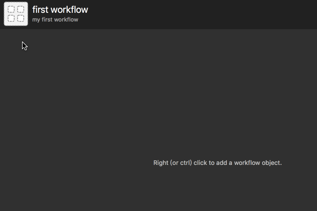
是不是非常简单？到目前为止，完全不需要编程基础。
workflow支持什么功能
截止到 v3.6.1 版本，workflow 支持 Triggers、Inputs、Actions、Utilities（alfred3.x新增）、Outputs 共5项主要功能，如下所示。
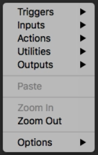
这5项功能一共包含39个组件。其中
- 输入包含 Triggers（触发器）和 Inputs（输入触发）；Triggers 中的流程可以触发 Inputs 的流程，反之则不行，同时它们都可以触发其它后续流程。
- 输出即 Outputs，包含了通知，放大展示、复制到剪切板，写入文本、播放声音、触发其它流程等。
- 中间 Actions 包含打开文件、在 finder 中展示文件、唤起 app、打开 web search、打开 URL、执行系统命令、执行 iTunes 命令、执行脚本、执行 applescript 脚本、在终端中执行命令等。
- Utilities 包含了一些公共组件，如变量设置、json 配置、过滤、转换、替换、延时、debug 等。
以上，Hotkey、Keyword、Script Filter 是常用的输入组件，Open URL、Run Script 是高频的 Action 组件，Post Notification、Copy to Clipboard 是受欢迎的输出组件，而 Arg and Vars、Filter、Delay、Debug 是贴心的公共组件。
合理搭配相应的组件，我们就能像搭乐高积木一样搭建 workflow。
哪些语言能编写workflow
你可能会说没有编程的 workflow 有什么意思，是的，alfred 除了使用可视化组件，简化搭建 workflow 的难度外，还内置了多种语言支持。我们不需要关心语言之间的交互细节，只需要使用它们接收输入，提供输出，其它事情统统交给 alfred。
目前，我们可以直接使用如下8种语言编写脚本：
- bash
- zsh
- php
- ruby
- python
- perl
- applescript
- javascript
你没看错，javascript 也是默认支持的（jser要疯狂了）。除了上述8种语言外，通过bash或zsh，一样可以唤起其它语言，如 java、c、go 等等。
实际上，python 可能是 alfred workflow 中最常用的编程语言，前人编写了大量的 python 脚本，都可以在 alfred 中大放光彩。
请注意，以上编程语言可以在这两个组件中使用：① Inputs -> Script Filter、② Actions -> Run Script。
workflow的不足
本文聊了这么多，workflow的优势就不多说了。
很明显，workflow 不是万能的，很多场景，v3.6.1 的 alfred 还覆盖不到。比如说：
- 无法监听用户操作，自动录入工作流。对于大多数人来说，编码创造工作流的成本太高，alfred 若能监听一段时间用户操作，将之转换成工作流，无疑工作流入门成本会大幅度降低，同时也能弥补 applescript 语言的不足（未提供 applescript 接口的应用几乎无法编程），当然这个要求很高，比如说alfred可能需要获取输入时光标所在的屏幕位置，被操作应用的坐标、宽高以及输入源（键盘、鼠标等）的操作等。
- 没有可视化的组件界面，相比 v2.x 版本而言，v3.x 版本中操作依然停留在文本输入输出上，若能多些可视化组件，比如图片展示，图文混排等，那么编程的空间将更大。
- 不支持常驻窗口，且常驻窗口上可以二次编程。若能在常驻窗口上放置 todolist、便签，以及监听股票走势等等，那么，几乎就能面向 alfred 开发小程序了。
- 不支持触摸板手势或 touchbar 直接唤起工作流，手势输入或 touchbar 的玩法很多，创意也很多，有很大的想象空间。
当然，可能还有更多更好的 idea，现如今的 alfred 暂不支持，欢迎在评论区回复交流，一起畅想 alfred 的未来。
我的一些心得
最后，谈谈我开发 alfred workflow 的一些心得。
关于调试：
alfred 流程报错不会有通知和提示，因此一旦 workflow 没有按照你的期望提供输出，那就要注意了，打开 debug 窗口，或引入 Utilities -> Debug 组件，看看有没有异常输出。
alfred 虽然支持多种语言的执行，但执行过程中无法单步 debug，这给调试带来了挑战。所以，开发 workflow 时需要及时的进行单元测试，待部分功能完善后，再进行后续开发，避免陷入根据错误输出无法第一时间定位问题的窘境。
关于alfred选项列表输出：
我们提供输入，往往是为了获取输出列表，然后选择列表中的一项，执行后续流程。如下所示，列表中的 9 项即选项列表。
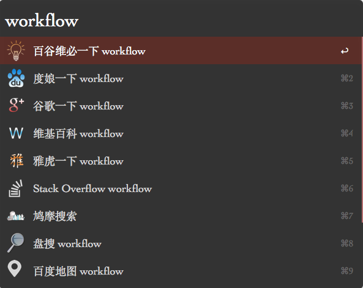
实际上，选项列表对应一个 xml 配置，工作流中只需输出配置好的 xml 即可，请参考如下格式。
<?xml version="1.0"?>
<items>
<item uid="" arg="https://www.google.com/search?q={query}&safe=off">
<title>谷歌一下 {query}</title>
<subtitle>副标题</subtitle>
<icon>google-icon.png</icon>
</item>
...
</items>
以上，arg 即往后传递的参数，title 标签内填写标题，subtitle 标签内填写副标题，icon 标签内填写当前选项的图标。然后直接使用 shell 的 echo 打印以上 xml，即可输出以上选项列表。
xml 中如果包含链接，则 & 需要替换为 &。
关于选项列表多次输出&流程间调用：
很多时候，一次输入可能不够，若需要多次输入信息，又该如何实现呢？不妨参考如下两种方案：
选项列表的输出依赖 Inputs -> Script Filter 组件，若流程中包含多次输入，顺序引入多个 Script Filter 组件即可。
若需要唤起 ① 其它分支流程（同一个 workflow 不同流程）、② 其它 workflow 中的流程（跨 workflow 调用）或 ③ 回到当前流程源头（重复执行、直到退出），则可给需要唤起的流程头部插入 Triggers -> External 组件，然后该组件所在流程便可通过 applescript 脚本唤起。applescript 脚本如下所示：
tell application "Alfred 3" to run trigger "action" in workflow "com.louis.alfred.CRUD_Module" with argument "test"
这段代码的意思是：让 Alfred 3 应用，带上参数 “test”，去打开 Bundle Id为 “com.louis.alfred.CRUD_Module” 的 workflow 中名称为 “action” 的触发器所在流程。
以上，方案1实现简单，不可复用；方案2实现略复杂，优点是可复用。你可以稍微感受下我之前写的一个CRUD的workflow（主流程使用了 24 个组件），其中 6 次依赖 External 组件串起流程（见图中红色下划线标出部分）。
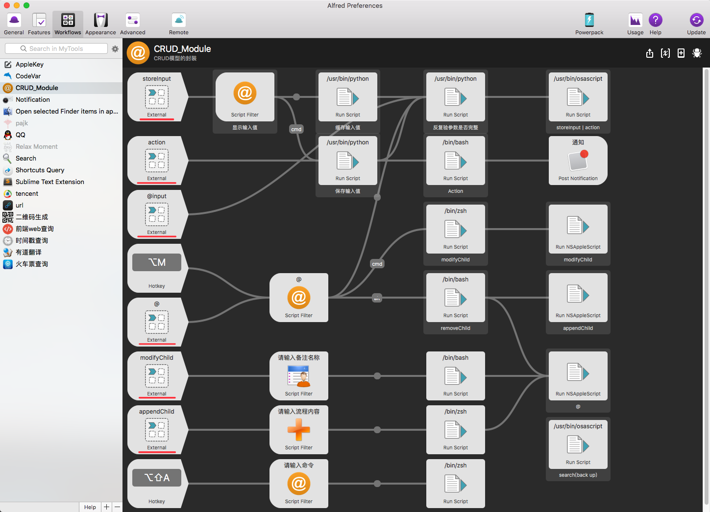
该 CRUD 的 workflow 使用非常简单，如下演示了新增流程去打开 iTerm 并执行 ll 命令的过程。
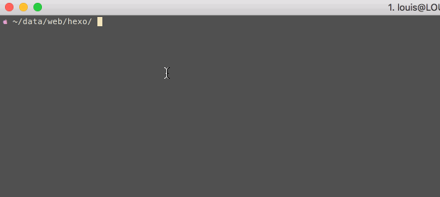
注意事项：
根据我的经验，workflow 开发中还需注意以下几点：
- 流程中的节点往后传递参数非常简单，只需往控制台输出即可。但须注意，多个控制台输出会合并到一起，因此除了往后传递参数外，其他情况下都不要往控制台打印文本。通常控制台输出会包含换行符，为避免换行符带来干扰，推荐使用
echo -n（bash） 或sys.stdout.write（python）；直接执行 js 时，方法内部的return 即往后传递参数，此时console.log输出到控制台并不合法。 - 开发中容易出现 utf-8 编码的问题，建议编程中少用或不用中文注释，或者重载 utf-8 编码（python）。
- 如果需要携带参数，去唤起其它应用，applescript 会是个不错的选择。
为什么会有这篇文章
到这，文章就快结束了，从 2015 年 3 月 28 日 接触 alfred 起，我便迷上了它的超强工作流。alfred 几乎可以做任何自动化工作流的事情（只要能用代码描述这个工作流就行），它彻底改变了我对 mac 的认知。此后，我曾多次向团队同学安利并分享它的神奇之处，他们鼓励我开一个在线直播，有偿分享，但对我而言，能写一篇介绍它的文章，几乎是我的荣幸！最后，写得不好的地方欢迎批评斧正，感谢您的阅读！